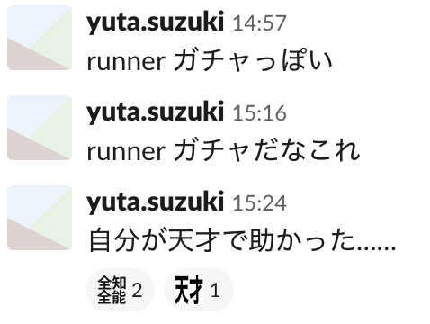

DeveloperSuccess として何を届けられるか
様々な分野を経た先として何ができるか
2019/07/06(Sat.) Battle Conference U30
Who?
Yuta Suzuki (@euxn23)
Engineer @ Bitbank (2018/07-)
Lead of Developer Success Team
AWS, DevOps, NodeJS Engineer
formally, Application Engineer (Frontend / Backend)
Community activities
Lead of CROSS Party 2019
Member of TypeScript meetup JP
Organizer of awswakaran.tokyo
ビットバンクは、ビットコインなどを扱う
仮想通貨取引所です
金融機関としての安定稼働かつ堅牢なシステム
Web の DNA を持つ技術選定・開発速度
両方が求められるシステム開発をしています
高速な開発・ダイナミックなアサインのため
TypeScript を全面採用
この両輪を軸に開発されるシステムかつ、全面 TypeScript な環境というのは、
なかなか希少で魅力的ではないでしょうか。
安定かつ堅牢かつ高ガバナンスを保ちつつ、
開発効率・開発体験を向上させるために、
Developer Success に取り組んでいます
私が Deveoper Success をはじめるまで
昔の私
文系出身でいろんなことに手を出していたので
一芸もなく遠回りな道を歩んできた
自分のキャリアに自身が持てないままだった
Career (2015/04-2017)
Application Engineer @ Nifty
Cloud Platform
- NodeJS, CoffeeScript, ML, Python, Go
IoT Service
先輩「このままだと器用貧乏になっちゃうよ」
私「フロントエンドにしぼっていくか〜」
Career (2018-2018/06)
Frontend Engineer @ Livesense
私「フロントエンドだけだと飽きてきた、
Node.js で高アクセスな仕事がしたい！」
Career (2018/07-)
Bitbank Inc.
bitbank.cc
- Angular, TypeScript, Node.js
Developer Success
CTO「フロントエンド以外の経験もあるみたいだし、
全社開発基盤的な、横断的な仕事を任せたい、
社内パッケージの整理やデプロイの刷新、
TypeScript 化とか BFF 化とか……」
「今なら学んできた知識が身に沁みているはず
今まで回り道した分を生かしたい」
Developer Success の前進として取り組み開始
私「社内パッケージ整理したり audit したり
Node のバージョンあげたりしてるし、
全社 Node 基盤チーム(1人)とかかな」
同僚「それ Developer Success じゃない？」
開発者の幸せのために様々なレイヤーで
なんでもするロール
Developer Success の取り組み方針
楽になるので本当はやりたいけど後回しになっていることをやる
開発速度を停滞させかねなに要因となるコードやフローを改善する
開発者がパフォーマンスを発揮できる環境を維持・改善する
なんでもするためには
幅広くできるスキルセットが必要
↓
回り道をしてきたキャリアが鍵に
Developer Success がいると、何が嬉しい？
煩雑なリリースフローによる疲弊を事前に防ぐ
メンテ不可能なコードの発生を事前に防ぐ
セキュリティを確保しつつ働き方の自由度をあげる
↓
開発者が幸せに！
Developer Failure してしまわないようにする
社内のパワーバランスや承認をあるべきに保ち、不満を作らないようにする
過剰な承認や雑務で開発効率が下がり、本質以外で疲弊してしまわないようする
イベント登壇や OSS 活動のモチベーションを会社が阻害してしまわないようにする
↓
開発者の成功が採用や離職防止になり、
チームの、やがては会社の成功に繋がる
やらないと……？
git の HEAD 参照なので破壊的変更でバグるかも
パッケージ更新のハードルが上がって開発速度が停滞
CI などの認証で煩雑な手順を踏む必要があり疲弊
npm package の知識
node.js で fs を操作する経験
複雑なシステムを紐解くのが好きな性格
これらをもとに一人、複雑システムと戦う！
Developer Success !!
private repository の HEAD 直接参照
↓
npm enterprise への移行 + peer dependency 化
開発者の幸せは私の幸せ
通称 monopoly プロジェクト
(パッケージを整理する過程で一部が モノリポ になったため)
「承認・デプロイフローを効率的にしつつ
ガバナンスを強化したい」
デプロイ環境が 状態を持つサーバ なのでクリーンなデプロイではない
リリースのたびに承認ワークフローを通して証跡を残す必要が出るかも
権限分割ができないので全部 CTO 承認を通さないといけなくなる
GitLab Runner と CI/CD の知識
アプリケーション / Docker のビルドの知識
AWS のデプロイ権限の知識
謎に詳しい GitLab の知識をもとに戦う！
Developer Success !!
CTO 承認後のデプロイサーバからのデプロイ
↓
GitLab Runner を用いた権限管理されたデプロイ
安定的なデプロイを構築、
問題発生時の原因調査が容易に
自分で自分の改善の恩恵を受けたとき
自分のことを天才だと感じる
私にとって Developer Success とは何であるのか
Q. DeveloperSuccess として何を届けられるか、
様々な分野を経た先として何ができるか
A. 回り道の数だけ誰かを幸せにできると信じて、
経験を元にさらにより多くの手段を身に着けるだけ
「自分が回り道したせいで、
他の開発者に手助けくらいしなくちゃな」
幾たびの現場を経て器用貧乏、
たった一つの CS 学位もなく、
たった一つの専門分野もなし。
若者はまた独り
ネットの海で武器を磨く
けれど、
その回り道は、それでも血肉になっていた